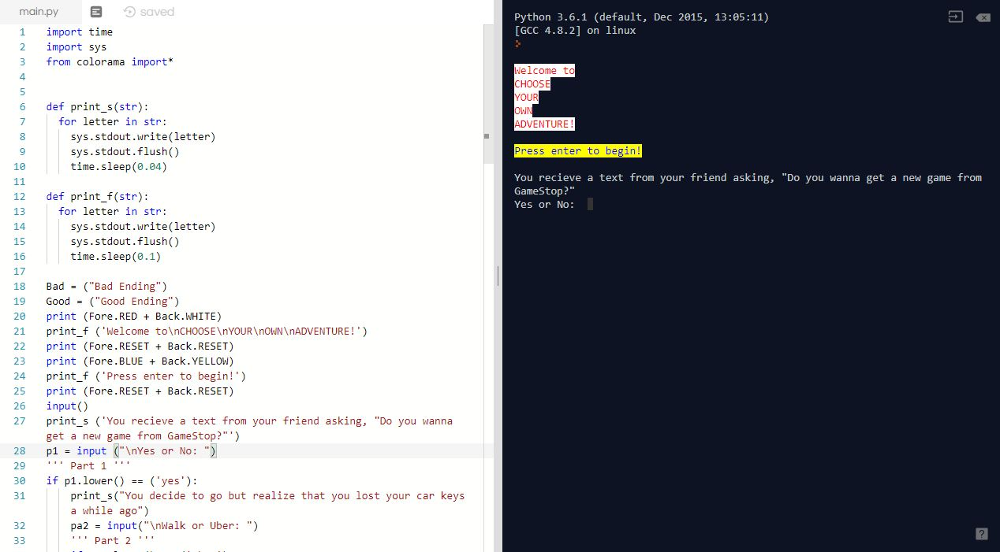

.
QALFICATIONS SUMMARY
Film and Television Production: Experienced in a wide range of film and video projects from their inception to completion. Ability to efficiently organize and coordinate shoots. Knowledge and experience using a variety of production equipment. Experience with script analysis and providing input for any necessary script changes. Skilled at writing and editing scenes, treatments, and scripts. Proficient in film and sound editing. Administration and Communication: Provide efficient scheduling and necessary administrative support for a wide variety of film production projects. Prioritize the film scene sequence to meet strict deadlines. Support fellow production crew members to encourage cohesiveness. Establish and maintain strong working relationships with production crew and all actors.
Technical Proficiencies: Adobe Premiere, FinalCutPro4, Celtics preproduction software, MS Office, various Nikon Digital cameras, Panasonic Digital cameras, 16 mm Arriflex, Sony HD camerasAdditional Strengths: Enthusiastic and creative. Demonstrated ability to meet deadlines and objectives. Possess necessary organizational and communication talents to successfully complete projects. Understand necessary budgeting process to maximize production within budgetary guidelines. Served as Producer for Student Muni Award-winning film.
EDUCATION
B.G.S in Film and Media Studies, emphasis in film production, minor in Business (20XX) University of Kansas, Lawrence, KSSELECTED PROJECTS
Director/ Producer“Broken Dam”– 16mm Short Film
“Hurricane Jane: the art of seduction”–Short Claymation
Director of Photography / Editor
“Broken Dam” – 16mm Short Film
“A Day on Wescoe Beach”- HD Short Documentary
Writer/ Director
“A New March”- Short P.S.A
Producer
“Grass Roots” – HD short documentary
“ALPHA BRAVO CHARLIE” – HD Short Film Technical Director
“A. Masterson” – Short Video
Computer Science Projects
Choose your own adventure story!
